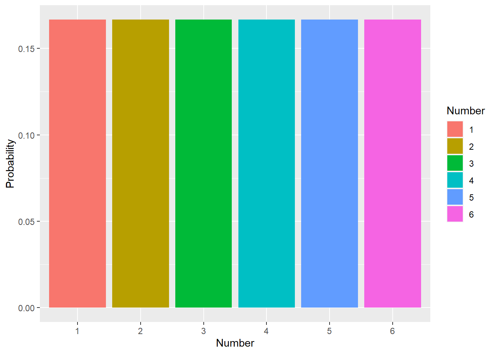
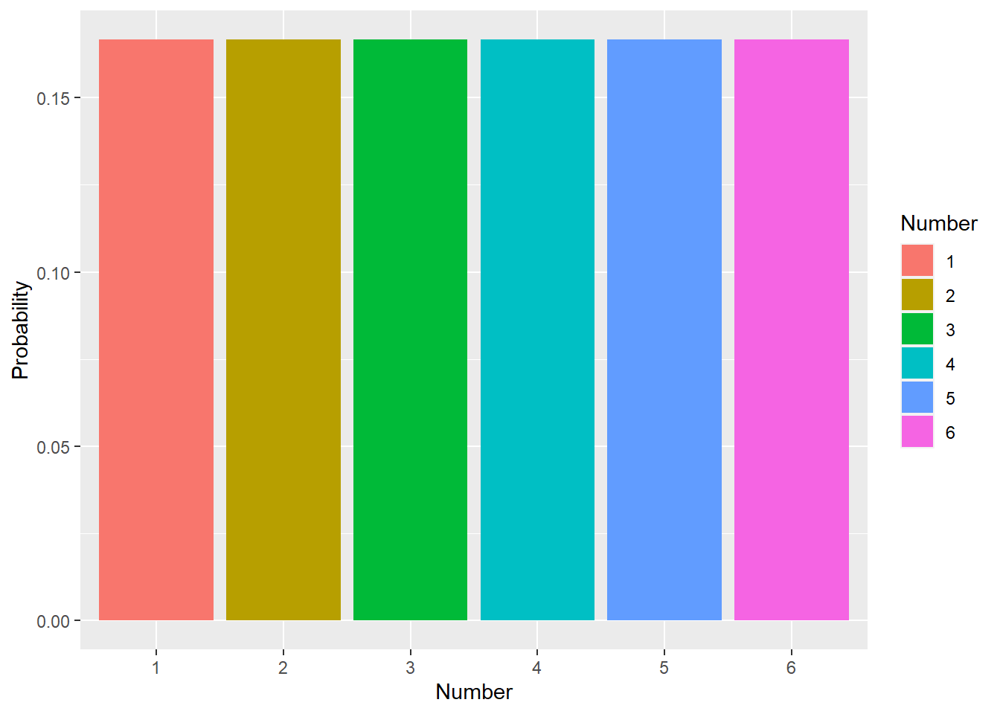
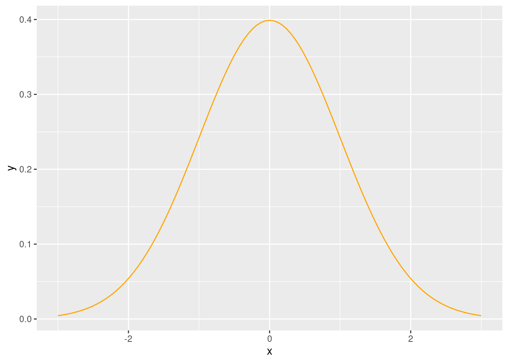
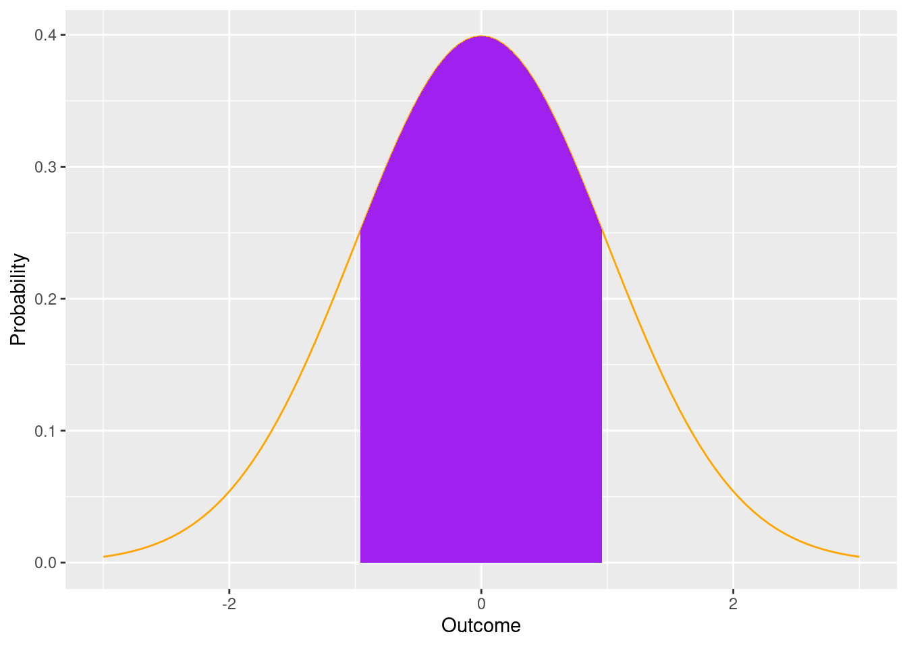
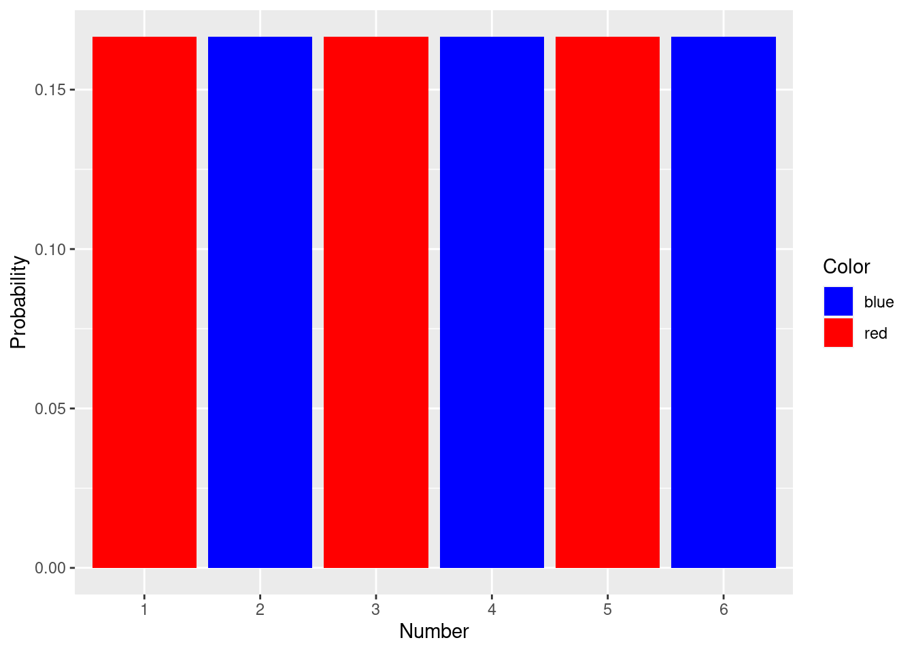
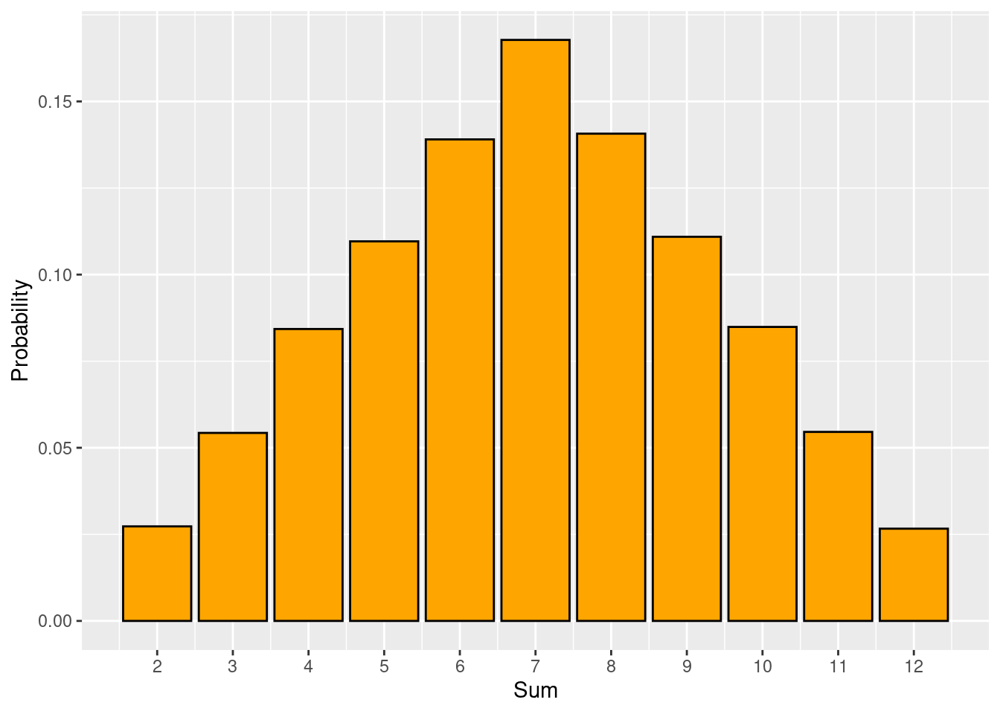

die_roll <- data.frame(Number = 1:6, Probability = rep(1/6,6))
die_roll$Number <- factor(die_roll$Number)
library(ggplot2)
ggplot(die_roll, aes(x=Number, y= Probability, fill=Number)) +
geom_col() 
The backbone of statistics!
We’ve already address probability. When we stated the 95% confidence interval means that if we make these intervals from 100 samples that we expect 95 of them to contain the true mean, we are discussing probability. An even easier example is flipping a coin. You probably know there is a 50% chance of a coin landing on heads. That doesn’t mean given flip will be half heads and half tails. Both of these statements refer to likely outcomes if we do something many, many times!
To put it specifically, the probability of an outcome is its true relative frequency, the proportion of times the event would occur if we repeated the same process over and over again. We can describe the probability if an outcome by considering all the potential outcomes and how likely each is. If we describe all the outcomes, the total probability must be equal to 1 (since frequency is typically measured as a fraction!). Some probability distributions can be described mathematically, others are a list of possible outcomes, and others are almost impossible to solve. The “impossible” ones require simulations, and we will return to this for our introduction to Bayesian analysis.
The simplest case is when we focus on outcomes for a single trait that falls into specific categories. These outcomes are often mutually exclusive, meaning only one can happen (like our heads and tails example!), and lead to discrete probability distributions (meaning each outcome has to be a specific value). Another example is rolling a 6-sided die. The die can only land on numbers 1 to 6 (so 2.57 is not an option!).
die_roll <- data.frame(Number = 1:6, Probability = rep(1/6,6))
die_roll$Number <- factor(die_roll$Number)
library(ggplot2)
ggplot(die_roll, aes(x=Number, y= Probability, fill=Number)) +
geom_col() 
in this example, the probability of rolling a 6 is .167. You may see this written as
\[ P[roll=6]= \frac{1}{6} \sim .167 \]Obviously when you roll a die you don’t roll .167 of a 6. You roll a 1, 2, 3, 4, 5, or 6. Again, probability refers to the expected outcome over multiple attempts.
Compare this to a continuous probability distribution, where the outcome can take any value in a given range.
ggplot(data = data.frame(x = c(-3, 3)), aes(x)) +
stat_function(fun = dnorm, n = 101, args = list(mean = 0, sd = 1), color = "orange")+
labs(y="Probability", x="Outcome")
Here’s an odd outcome: Since the outcome can take on any value in a given range, the chance of it being a specific value is 0. Think about it this way - for any value you mention, I can zoom in more. For example, if you ask the probability of x in the above graph being equal to 0, we could zoom in to 0.0, or 0.00, or 0.000. At some limit of resolution, the area under the curve (which denotes the probability and would be found using integral calculus, which we won’t do here) would be equal to 0!
This may seem like an odd aside, but it is actually very important. It explains why when we will discuss probabilities the probability of an outcome being less than, more than, or between two values in upcoming chapters. For example, we can note (again) that for a normal distribution (what we see above and will (still eventually) define more appropriately) that 67% of the data falls within one standard devation for perfectly (very rare!) normally-distributed data.
#function from https://dkmathstats.com/plotting-normal-distributions-in-r-using-ggplot2/
dnorm_one_sd <- function(x){
norm_one_sd <- dnorm(x)
# Have NA values outside interval x in [-1, 1]:
norm_one_sd[x <= -1 | x >= 1] <- NA
return(norm_one_sd)
}
ggplot(data = data.frame(x = c(-3, 3)), aes(x)) +
stat_function(fun = dnorm, n = 101, args = list(mean = 0, sd = 1), color = "orange")+
labs(y="Probability", x="Outcome") +
stat_function(fun = dnorm_one_sd, geom = "area", fill = "purple")
Sometimes we focus on the probability of more than one outcome for a given event. This requires adding or combining probabilities. The first step in doing this is deciding if the outcomes are mutually exclusive. This means they can not occur in the same unit of focus. For example, we could ask the probability of rolling a 1 or a 6, or of being >2 and <-2. In both cases, a single outcome can’t be both of these things, so the outcomes are mutually exclusive. When this is the case, we simply add the probabilities. This is sometimes called the union of two outcomes.
Contrast this with when we want to know the probability of two things occurring that may occur in the same unit. For example, assume our die not only had dots on it, but these dots were a different color. For example, odd numbers were blue and even numbers were red.
colors <- c("blue" = "blue", "red" = "red")
die_roll$Color <- NA
die_roll[as.numeric(as.character(die_roll$Number)) %% 2 == 0, "Color"] <- "blue"
die_roll[as.numeric(as.character(die_roll$Number)) %% 2 != 0, "Color"] <- "red"
ggplot(die_roll, aes(x=Number, y= Probability, fill=Color)) +
geom_col() +
scale_fill_manual(values = colors)
Now, the probability of rolling any given group of numbers can be found by adding probabilities since the outcomes are mutually exclusive. Same for die color. However, what about the probability of rolling a blue (even) outcome or a 6? Note we can’t simply add these. Why not?
Because a single roll can result in a 6 and blue dots! So adding the probability of getting blue dots (.5) and of getting a 6 (.167) will double-count the 6. In other words, there is an an intersection of the possible outcomes. So, the probability of rolling a 6 or blue is equal to
\[ P[roll=blue] + P[roll=6] - P[roll=6 \ and \ blue]= \frac{1}{2} + \frac{1}{6} -\frac{1}{6} \]
This is sometimes called the general addition principle.
If we are measuring multiple outcomes (note this slightly different than the probability of two or more outcomes for a specific event), we need to consider if the events are independent. This means the outcome of one does not influence the outcome of the other. If this is true, the probability of both events occurring can be found by simply multiplying the probability of each (the multiplication rule). For example, consider the probability of flipping a coin twice and seeing a heads followed by a tails. We can write out all the options (T, HH, TH, TT); assuming independence, the probability for each is \(\frac{1}{4}\). We can also say the probability of heads on the first flip is \(\frac{1}{2}\) and the probability of tails on the second flip is \(\frac{1}{2}\); multiplying these yields \(\frac{1}{2}\).
Consider instead that we roll 2 dice and measure the sum of the rolls. Since one roll does not influence the other, these are independent events. As noted above, we can work out the probability distribution by writing out all possible outcomes:
rst Dic e |
|||||||
| 1 | 2 | 3 | 4 | 5 | 6 | ||
ond Dic e |
1 | ( 1 ,1) | ( 1 ,2) | ( 1 ,3) |
) |
( 1 ,5) | ( 1 ,6) |
| 2 | ( 2 ,1) | ( 2 ,2) |
) |
( 2 ,4) | ( 2 ,5) | ( 2 ,6) | |
| 3 | ( 3 ,1) |
) |
( 3 ,3) | ( 3 ,4) | ( 3 ,5) | ( 3 ,6) | |
| 4 |
) |
( 4 ,2) | ( 4 ,3) | ( 4 ,4) | ( 4 ,5) | ( 4 ,6) | |
| 5 | ( 5 ,1) | ( 5 ,2) | ( 5 ,3) | ( 5 ,4) | ( 5 ,5) | ( 5 ,6) | |
| 6 | ( 6 ,1) | ( 6 ,2) | ( 6 ,3) | ( 6 ,4) | ( 6 ,5) | ( 6 ,6) |
Now assume we want to know the probability of the sum of the dice being equal to 5. If we assume independence, the the probability of rolling a sum of 5 (highlighted cells above) is \(\frac{4}{36}\).
We could also simulate the outcome
library(reshape2)
number_of_rolls <- 100000
sum_of_rolls <- data.frame(index = 1:number_of_rolls, Sum = NA)
for (i in 1:number_of_rolls){
dice_roll_trial <- sample(1:6, size = 2, replace = TRUE)
sum_of_rolls$Sum[i] <- sum(dice_roll_trial)
}
sum_of_rolls_df <- dcast(sum_of_rolls, Sum ~ "Probability", length )Using Sum as value column: use value.var to override.sum_of_rolls_df$Probability <- sum_of_rolls_df$Probability/number_of_rolls
ggplot(sum_of_rolls_df, aes(x=Sum, y=Probability)) +
geom_col(fill="orange", color="black") +
labs(y="Probability")+
scale_x_continuous(breaks = c(2:12))
Notice here we find the probability of rolling a sum of 5 is 0.11091 which is very close to \(\frac{4}{36}\).
To find the probability using math, we have to note that the dice rolls are independent. For example, even though we only want a 4 on the second dice if we roll a 1 on the first dice, the roll of the first die does not influence the roll of the second. We should also note the desired outcomes are mutually exclusive. So we can find the probability of each happening and then add them. It’s easy to see how probability can get complicated!
Unlike our coin example, sometimes a first event occurring does influence the probability of a second event.

In a similar vein, although the risk of shark attack is low, it increases dramatically if you swim in the ocean.
Unlike our previous examples, we now have 2 events (lets call them A and B), and the probability of both occurring is equal to
\[ P[A \ and \ B] = P[A] \ P[B|A] \]
which can be read as “the probability of A and B occurring is equal to the probability of A multiplied by the probability of B given A occurs”. Note if A and B are independent, this reduces to the multiplication rule.
We can extend this by noting
\[ P[A \ and \ B] = P[A] \ P[B|A] \\ P[A \ and \ B] = P[B] \ P[A|B] \\ P[A] \ P[B|A] = P[B] \ P[A|B] \\ P[A|B] = \frac{P[B|A]*P[A]}{P[B]} \]
This rule is known as Bayes’ Theorem. We will return to this when we discuss Bayesian analysis, but we can use it here for demonstration.
For our lightning example, we could use some (pretend) numbers to understand the risk and Bayes’ Theorem. First, let A be the probability of being outside in a lightning storm. B is then the probability of getting struck by lightning, , and P[B|A] is the probabiity of getting struck by lightning given that you are outside in a lightning storm (hint: it’s much higher than the P[B]).
Here’s anoher similar (in concept) example. Medical trials are designed to test the effectiveness of drugs or treatments. In these trials, drug efficacy is considered by comparing outcomes in people who receive the drug or treatment compared to those who receive a placebo (such as a sugar pill). Note this only works if participants do not know which group (drug vs placebo) they are in (why?). In a given trial, people who receive the drug recover 60% of the time (or avoid some other adverse outcome). This may seem good, but it’s only relevant when compared to the placebo group. What if people receiving the placebo recovered 80% of the time? Also, if we know the probability of recovering without the drug, we can consider the total probability of recovery. For now, let’s assume that 20% of people who receive the placebo recover.
We could use a tree diagram to consider possible options:
library(DiagrammeR)
bayes_probability_tree <- function(prior, true_positive, true_negative, label1 = "Prior",
label2 = "Complimentary Prior", label3 = "True Positive",
label4 = "False Negative", label5 = "False Positive",
label6 = "True Negative") {
if (!all(c(prior, true_positive, true_negative) > 0) && !all(c(prior, true_positive, true_negative) < 1)) {
stop("probabilities must be greater than 0 and less than 1.",
call. = FALSE)
}
c_prior <- 1 - prior
c_tp <- 1 - true_positive
c_tn <- 1 - true_negative
round4 <- purrr::partial(round, digits = 5)
b1 <- round4(prior * true_positive)
b2 <- round4(prior * c_tp)
b3 <- round4(c_prior * c_tn)
b4 <- round4(c_prior * true_negative)
bp <- round4(b1/(b1 + b3))
labs <- c("X", prior, c_prior, true_positive, c_tp, true_negative, c_tn, b1, b2, b4, b3)
tree <-
create_graph() %>%
add_n_nodes(
n = 11,
type = "path",
label = labs,
node_aes = node_aes(
shape = "circle",
height = 1,
width = 1,
x = c(0, 3, 3, 6, 6, 6, 6, 8, 8, 8, 8),
y = c(0, 2, -2, 3, 1, -3, -1, 3, 1, -3, -1))) %>%
add_edge(
from = 1,
to = 2,
edge_aes = edge_aes(
label = label1
)
) %>%
add_edge(
from = 1,
to = 3,
edge_aes = edge_aes(
label = label2
)
) %>%
add_edge(
from = 2,
to = 4,
edge_aes = edge_aes(
label = label3
)
) %>%
add_edge(
from = 2,
to = 5,
edge_aes = edge_aes(
label = label4
)
) %>%
add_edge(
from = 3,
to = 7,
edge_aes = edge_aes(
label = label5
)
) %>%
add_edge(
from = 3,
to = 6,
edge_aes = edge_aes(
label = label6
)
) %>%
add_edge(
from = 4,
to = 8,
edge_aes = edge_aes(
label = "="
)
) %>%
add_edge(
from = 5,
to = 9,
edge_aes = edge_aes(
label = "="
)
) %>%
add_edge(
from = 7,
to = 11,
edge_aes = edge_aes(
label = "="
)
) %>%
add_edge(
from = 6,
to = 10,
edge_aes = edge_aes(
label = "="
)
)
message(glue::glue("The probability of having {label1} after testing {label3} is {bp}"))
print(render_graph(tree))
invisible(tree)
}
#first example
bayes_probability_tree(prior = 0.5, true_positive = 0.8, true_negative = 0.8, label1 = "medicine", label2 = "placebo",
label3 = "cured", label4 = "not cured",
label5 = "cured", label6 = "not cured")The probability of having medicine after testing cured is 0.8This tree let’s us consider multiple things. We can see the probability of being cured is .5, but 80% of those come from the group receiving medicine (again, the P[being cured|given medicine]). WE could also derive this using Bayes Theorem.
$$ P[being cured|medicine] = \ P[being cured|medicine] = \ P[being cured|medicine] = .8
$$
One more example. Instead of medical trials, let’s focus on medical screenings. These are used to identify patients who have a condition, but there are no perfect tests. A test may give a false positive, meaning it says a condition exists when it does not. A test can also give a false negative, meaning it finds a condition does not exist when it really does. Both of these present issues for patients and explain why series of tests are often used before more invasive procedures are employed.
For example, assume a procedure is used to assess skin cancer. This cancer occurs at a frequency of .00021 in the general population. The test is fairly accurate; if a patient has cancer, the screening will correctly identify if 95% of the time. However, the probability of a false positive is .01. Given these numbers, how worried should a person be about a positive test?
Although the test seems to be good, note the prevalence of a false positive is far higher than the prevalence of cancer! This means most positives will likely be false. To quantify this, let A be the probability of cancer and B be the probability of a positive screening. So,
\[ P[A|B] = \frac{.95 \ * .00021}{.95 \ * \ .0021+.01*.9779} \\ P[A|B] = .169 \]
In other words, only 17% of people with positive screenings actually have cancer.
To show this in a probability tree:
bayes_probability_tree(prior = 0.0021, true_positive = 0.95, true_negative = 0.99, label1 = "cancer",
label2 = "not cancer",
label3 = "positive",
label4 = "negative",
label5 = "positive",
label6 = "negative")The probability of having cancer after testing positive is 0.16625False results are integral to the ideas of test specificity and sensitivity Lalkhen and McCluskey (2008). A specific test will yield few false negatives, while a sensitive test will yield few false positives. Put another way (from Lalken & McCluskey (2008): “A test with 100% sensitivity correctly identifies all patients with the disease”, and ” a test with 100% specificity correctly identifies all patients without the disease”. True and false results also impact predictive values.
| Condition | ||
Test Outcome |
Present | Absent |
| Positive | True Positive | False positive |
| Negative | False negative | True Negative |
Sensitivity= True Positive/ Condition present |
Specificity = True negative/ Condition negative |
These ideas can also be related to power. We will return to this visualization in future chapters.

Now that we’ve discussed probability, we can move into the wild world of p-values and discuss how they relate to estimation!